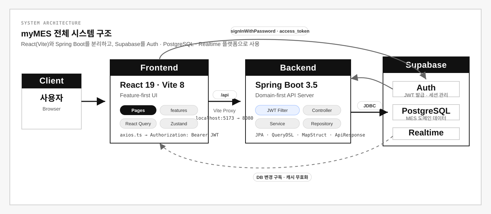
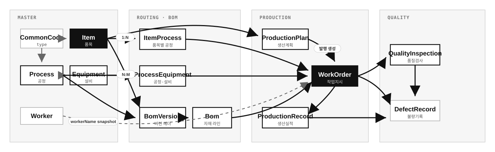

Manufacturing Execution System
제조 현장의 생산 계획 수립부터 작업 지시 발행, 실적 집계, 품질 불량 관리까지를 하나의 시스템으로 통합한 풀스택 MES 프로젝트입니다. Spring Boot 백엔드와 React 프론트엔드를 분리하고, Supabase를 인증·데이터베이스·실시간 플랫폼으로 활용했습니다.
Backend 일관성
Frontend 일관성
API 설계
Realtime
개발 유형 개인 프로젝트 (풀스택)
GitHub github.com/sso0o/myMES
Backend · Frontend · DB · Auth · Realtime
| 도메인 | 주요 기능 (구현 완료 기준) | 상태 | API 경로 |
|---|---|---|---|
| 공통코드 | 코드 그룹 / 개별 코드 CRUD, 계층형 코드 체계 | 완료 | /master/code-groups |
| 품목 관리 | 자동채번 ITEM-000001, 공통코드 연계, 중복 코드 검증 | 완료 | /master/items |
| 공정 관리 | 자동채번 PROC-000001, 공정 순서 정의 | 완료 | /prod-basic/processes |
| 설비 관리 | 설비 등록·비활성화, 공정 연결 | 완료 | /prod-basic/equipment |
| 품목별 공정 | 품목 라우팅, 공정 일괄 복사 (Soft Delete + 재생성) | 완료 | /prod-basic/item-processes |
| BOM 관리 | 버전 헤더 분리(BomVersion) · Copy-on-Write 저장 | 완료 | /prod-basic/boms |
| 공정-설비 | 공정-설비 N:M 매핑, 작업지시 배정 가시화 | 완료 | /prod-basic/process-equipment |
| 생산 계획 | 상태 흐름 DRAFT→CONFIRMED→RELEASED→CLOSED, 일괄 확정·일괄 발행 | 완료 | /production-plans |
| 작업 지시 | 자동채번 WO-yyyyMMdd-0000, 공정별 다중 행 생성, 이전 공정 완료 검증 | 완료 | /work-orders |
| 생산 실적 | 투입·양품·불량 수량 검증, 작업지시 진행 상태 연동 | 완료 | /production-records |
| 품질 검사 | 검사 유형(수입·공정·최종), 합격/불합격/보류 판정 | 완료 | /quality/inspections |
| 불량 관리 | 불량 유형·원인 분류, 작업지시-생산실적 정합성 검증 | 완료 | /quality/defects |
| 작업자 관리 | 자동채번 W0001, 재직/휴직/퇴사 상태, 퇴사 처리 분리 | 완료 | /operation/workers |
| 대시보드 | KPI 4종 + Bar/Line/Pie 차트 + 지연 이슈 목록 · Supabase Realtime 갱신 | 완료 | /api/dashboard/* |

Backend — Domain-first 패키지
Frontend — Feature-first 폴더
CHALLENGE 01
Supabase JWT를 Spring Security와 직접 통합
Supabase는 자체 Auth 서버가 JWT를 발급하므로, Spring Security의 기본 OAuth2 Resource Server 설정만으로는 프로젝트의 필터 구조와 클레임 매핑을 그대로 맞추기 어려웠습니다. 특히 Supabase JWKS 공개키 로드, 서명 검증, 전용 클레임 추출을 표준 필터 체인 안에서 일관되게 처리해야 했습니다.
OncePerRequestFilter를 상속한 SupabaseJwtFilter를 직접 구현하여, Supabase JWKS 엔드포인트에서 공개키를 로드하고 JJWT 라이브러리로 서명을 검증한 뒤 SupabasePrincipal(userId, email, role)을 SecurityContext에 주입했습니다. 컨트롤러에서는 @AuthenticationPrincipal로 자연스럽게 접근할 수 있습니다.
프론트엔드 Supabase Auth와 Spring Security가 동일한 JWT를 공유하는 일관된 인증 흐름 확보. 별도 인증 서버 없이 Stateless 구조 유지.
CHALLENGE 02
품목별 공정 일괄 복사 — 트랜잭션 원자성 보장
특정 품목의 전체 공정 라우팅을 다른 품목으로 복사하는 기능에서, 복사 도중 일부만 저장되고 실패하는 부분 커밋 상황이 발생할 수 있었습니다. 또한 대상 품목에 이미 공정이 존재할 경우 기존 데이터와의 충돌 처리가 필요했습니다.
복사 로직 전체를 단일 @Transactional 메서드로 묶고, 복사 전 대상 품목의 기존 공정을 Soft Delete 처리한 뒤 새 공정을 일괄 저장했습니다. Soft Delete 덕분에 실패 시 완전 롤백이 보장됩니다.
복사 작업의 원자성 보장, 실패 시 원본 데이터 보전. 복사 이력 추적 가능.
CHALLENGE 03
서버 상태와 클라이언트 상태의 명확한 분리
초기 설계에서 API 데이터를 Zustand 전역 스토어에 저장하다 보니, 캐시 무효화·로딩 상태·에러 처리를 직접 구현해야 하는 부담과 상태 동기화 버그가 빈번하게 발생했습니다.
서버 상태(API 데이터)는 React Query로 전환하고, Zustand는 인증 세션·UI 상태 (사이드바 열림 여부 등) 클라이언트 상태만 담당하도록 역할을 엄격히 분리했습니다. API 호출은 api/{domain}Api.ts → hooks/use{Domain}Query.ts 2-레이어 구조로 고정했습니다.
자동 캐시 관리·Optimistic Update 활용, 상태 동기화 버그 제거, 컴포넌트 코드량 대폭 감소.
CHALLENGE 04
BOM 버전 관리 — Copy-on-Write 설계
기존 구조는 versionNo가 BOM 행마다 분산 저장돼 "버전" 자체가 데이터 모델에 존재하지 않았고, 과거 버전은 Soft Delete로 사라져 이력 조회가 불가능했습니다. 진행 중인 WorkOrder가 참조하는 버전을 임의로 비활성화하면 참조 무결성이 깨지는 위험도 있었습니다.
BomVersion 헤더 엔티티를 분리(A안 채택)하고 상태를 ACTIVE/INACTIVE 두 가지로 단순화했습니다. 재활성화는 비선형 이력을 만들기 때문에 금지하고, 대신 버전 복원(restore) 기능으로 대체하여 이력이 항상 앞으로만 진행되도록 했습니다. 저장은 Copy-on-Write — 기존 ACTIVE 라인 Soft Delete → 새 BomVersion 생성 → 새 라인 일괄 생성 → 기존 BomVersion INACTIVE 전이. WorkOrder는 생성 시점의 ACTIVE 버전을 FK로 고정해 참조 무결성을 보장합니다.
버전 메타데이터 추적 가능, 진행 중 작업지시의 BOM 참조 무결성 확보, 버전 상태 변경 시 N개 라인을 갱신하던 부담 제거.
CHALLENGE 05
자동채번 통일 정책 — 운영 안정성
사용자 입력 코드는 형식 일관성과 충돌을 사람에게 떠맡깁니다. 특히 작업지시 번호는 메모리 AtomicInteger로 관리돼 서버 재기동·다중 인스턴스 환경에서 동일 번호 발급 위험이 있었고, Soft Delete된 코드를 재발급하면 이력 추적성도 훼손되었습니다.
마스터·운영 도메인 코드를 모두 시스템 자동채번으로 통일했습니다 — ITEM-000001, PROC-000001, W0001, WO-yyyyMMdd-0000. DB의 마지막 코드를 prefix LIKE로 조회한 뒤 다음 번호를 계산하고, saveAndFlush unique 충돌 시 최대 3회 재시도, 실패 시 전용 비즈니스 에러로 응답합니다. 작업자 코드 채번은 native query를 사용해 @SQLRestriction(soft delete) 영향을 받지 않도록 처리 — 퇴사·삭제된 코드도 재사용 금지.
코드 정책 일관화, 다중 인스턴스 안전성 확보. 채번 시퀀스를 회귀 테스트(BackendRegressionTests)로 가드.
CHALLENGE 06
생산계획 — 일괄 확정 / 일괄 발행 Bulk API
생산계획은 DRAFT → CONFIRMED → RELEASED → CLOSED 4단계 상태를 가집니다. N개 계획을 개별 호출로 처리하면 일부만 성공하는 부분 커밋, 작업지시 자동 생성과의 트랜잭션 분리, 혼합 선택 시 어떤 액션을 적용할지에 대한 UX 모호성이 모두 발생했습니다.
백엔드는 단일 트랜잭션 bulk 엔드포인트 2개를 신설했습니다 — POST /production-plans/bulk-confirm, POST /production-plans/bulk-release. 부분 성공 대신 전체 성공 또는 전체 롤백 정책을 채택해 운영자에게 명확한 결과를 보장합니다. 발행 단계는 RELEASED 전이와 작업지시 자동 생성을 같은 트랜잭션에 묶었습니다. 프론트는 상태 필터 탭 + 탭별 단일 액션 UX(초안 탭은 일괄 확정만, 확정 탭은 일괄 발행만)로 혼합 선택 모호성을 제거했습니다.
한 번의 호출로 N건 상태 전이 + N건 작업지시 자동 생성을 일관성 있게 처리. UX 단순화로 사용자 의사결정 부담 감소.
CHALLENGE 07
작업자 vs 로그인 계정 — 도메인 lifecycle 분리
기존 백엔드의 user 도메인에 현장 작업자까지 묶으면, Supabase Auth 계정이 불필요하게 따라오고 작업자에게 비밀번호·권한 개념이 생겨 도메인 의미가 흐려졌습니다. 무엇보다 퇴사·삭제된 작업자도 생산 이력에는 남아야 한다는 요구가 로그인 계정 lifecycle과 충돌했습니다.
작업자를 worker 독립 도메인으로 분리하고 상태를 ACTIVE/ON_LEAVE/RESIGNED로 정의했습니다. 퇴사(상태 + 퇴사일 변경)와 삭제(잘못 등록된 마스터의 Soft Delete)를 명시적으로 분리했고, 로그인·권한·Supabase Auth 연동은 user 도메인에 한정했습니다. WorkerService 단위 테스트로 lifecycle을 가드합니다.
인증 lifecycle과 인력 마스터 lifecycle 독립화. 작업지시·생산실적이 안정적으로 작업자를 참조할 수 있는 기반(향후 workerId FK + workerNameSnapshot 도입 여지) 마련.
잘 된 점
도메인 기반 패키지 구조 덕분에 마스터·생산운영·품질 도메인을 확장해도 영향 범위를 작게 유지할 수 있었습니다.
Supabase Auth와 Spring Security를 JWT 기준으로 연결해 프론트·백엔드 인증 흐름을 하나의 토큰 체계로 정리했습니다.
생산계획 일괄 확정/발행, 작업지시 자동 생성, 공정별 진행 검증처럼 MES의 상태 전이를 트랜잭션 단위로 다뤘습니다.
자동채번·Soft Delete·회귀 테스트를 함께 정리하면서 운영 데이터의 중복, 삭제, 이력 보존 위험을 낮췄습니다.
React Query / Zustand 역할 분리로 상태 관리 코드가 눈에 띄게 단순해졌습니다.
아쉬운 점 / 개선 방향
현재는 CRUD·상태 전이 중심이므로, 실제 현장 적용을 위해 권한 세분화와 승인/감사 로그 흐름을 더 보강해야 합니다.
대시보드는 KPI와 차트 중심으로 구현되어 있어, 병목 원인 분석이나 기간 비교 같은 분석 기능 확장이 필요합니다.
테스트는 주요 서비스와 회귀 케이스에 집중되어 있어, 프론트 폼·React Query 훅·권한별 API 시나리오까지 넓힐 여지가 있습니다.
운영 배포 단계에서는 ddl-auto: validate 전환, 명시적 마이그레이션, Supabase Realtime replication 정책을 분리 관리해야 합니다.

초기에는 인증·공통 인프라와 마스터 도메인 안정화에 집중했고, 이후 운영 도메인(생산계획·작업지시·생산실적·품질·작업자)을 차례로 확장했으며, 최근에는 대시보드 가시화와 BOM 버전 관리, 설비-작업지시 배정 가시화로 마무리되었습니다.
인증 기반 · 공통 인프라 안정화
코드 운영 정책 · 인증 의사결정
운영 도메인 확장 · BOM 버전 관리
가시화 · 검증 강화 · UX 정리
개발 중 마주친 이슈를 P1·P2·기타로 분류했습니다. P1은 데이터 정합성·운영 안정성에 직접 영향을 주는 이슈, P2는 정합성·DX·배포 환경 이슈, 기타는 의사결정·정책 정리 항목입니다. 각 카드는 원인 → 해결 → 검증 흐름으로 실제 코드와 회귀 테스트(BackendRegressionTests)에 반영되어 있습니다.
작업지시 번호 중복 생성 위험
backend/workorder/WorkOrderService
메모리 AtomicInteger 카운터가 서버 재기동·다중 인스턴스 환경에서 충돌 위험. DB의 마지막 번호 조회 → 다음 번호 계산 방식으로 전환하고 saveAndFlush 충돌 시 최대 3회 재시도, 실패 시 WORK_ORDER_NO_GENERATION_FAILED 반환.
Soft Delete 필터가 조회에서 누락되지 않던 문제
backend/common/entity
@SQLRestriction을 @MappedSuperclass(BaseEntity)에 두면 각 엔티티에 안전하게 적용되지 않는 케이스가 존재. 각 concrete entity(Item·MfgProcess·WorkOrder·ProductionRecord·DefectRecord)에 직접 선언으로 변경 + 회귀 테스트 추가.
품목/공정 코드 자동채번 정책 전환
backend/item, backend/process
사용자 입력 코드는 충돌·정책 일관성 문제 유발. 코드 입력 자체를 폐기하고 ITEM-000001 / PROC-000001 시스템 자동채번으로 전환, 수정 API에서는 코드 변경을 허용하지 않도록 도메인 정책 정리.
소프트 삭제 누락 + 수정 시 정합성 검증 통합 보강
backend entity / service / repository
서로 연결된 4가지 정합성 이슈(소프트 삭제·Item 중복·Process 중복·Defect 작업지시 mismatch)를 한 번에 정리. 회귀 테스트 묶음(BackendRegressionTests)으로 재발 방지 라인을 구축.
BOM 버전 도입 시 기존 데이터 마이그레이션 오류
backend/bom/config/BomIndexConfig, entity/Bom
ddl-auto: update가 기존 행이 있는 테이블에 NOT NULL FK를 즉시 추가하다 실패. nullable 컬럼으로 추가 → 마이그레이션으로 채움 → NOT NULL 제약 3단계로 분리. 마이그레이션은 mymes.bom-migration.enabled 플래그로 제어.
Gradle build의 contextLoads 초기화 실패
backend test/build 환경
.env가 bootRun에만 연결되어 테스트에서는 DataSource·JWKS 초기화 실패. 테스트 전용 프로필(test) + H2 인메모리 DB 도입, SupabaseJwtFilter는 @MockBean으로 대체.
Item 수정 시 중복 itemCode 409 미차단
backend item/service
create()에만 중복 검사가 있고 update()는 곧장 덮어써 DB unique 제약 → 500으로 새어나감. existsByItemCodeAndIdNot를 추가해 자기 자신을 제외한 중복을 사전 차단, 비즈니스 에러 흐름으로 일관화.
Process 수정 시 중복 processCode 409 미차단
backend process/service
품목과 동일 패턴. existsByProcessCodeAndIdNot 추가 후 자기 자신 제외 중복 검증을 우선 수행하도록 변경. 중복 시 PROCESS_CODE_DUPLICATED로 일관된 응답.
Defect — 다른 작업지시의 생산실적 연결 가능
backend defect/service
/work-orders/A/defect-records 요청에 작업지시 B의 생산실적이 들어와도 막지 못하던 구멍. 조회한 productionRecord.workOrder.id와 요청 경로의 workOrderId를 비교, 불일치 시 즉시 비즈니스 예외.
JWT 직접 운영 vs Supabase Auth — 선택 기준 정리
인증 설계 / Supabase Auth
Supabase Auth도 내부적으로 JWT를 사용하므로 양자택일 구도가 아님을 확인. 본 프로젝트는 이미 Auth·DB·Realtime을 Supabase 중심으로 묶은 구조이고, 인증 운영 부담 절감 vs 인프라 종속성을 견주어 Supabase Auth 유지로 결정. 서버는 리소스 서버 역할에 집중하고, JWT 검증은 자체 SupabaseJwtFilter로 통합.